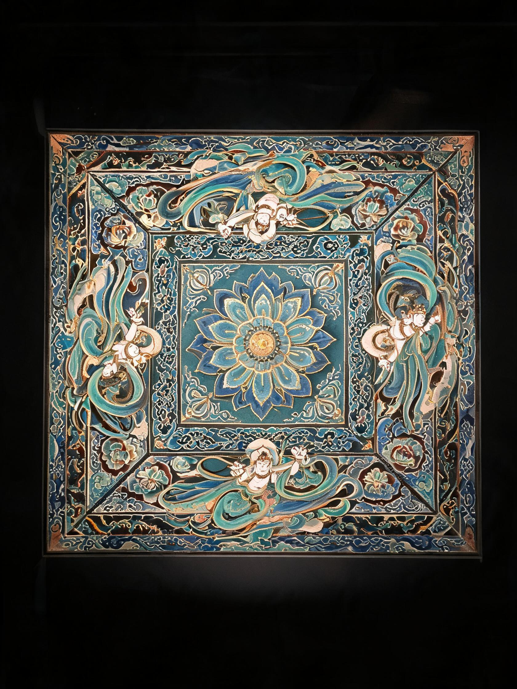
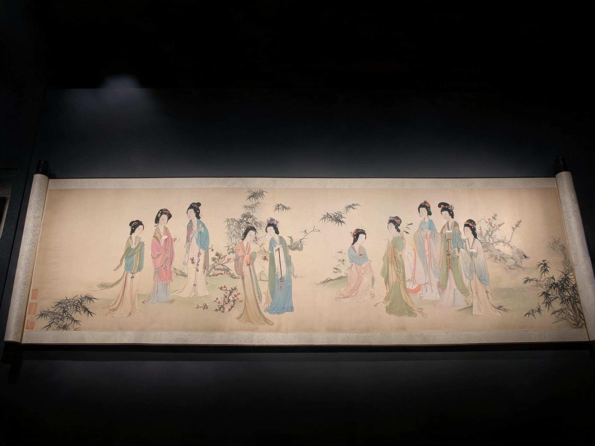
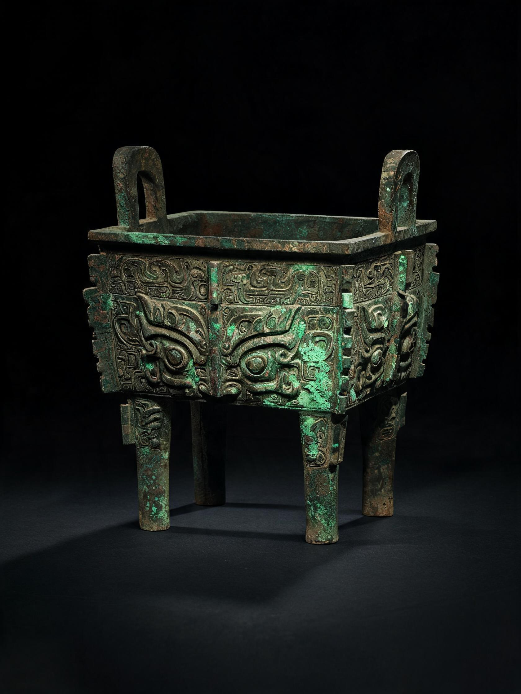
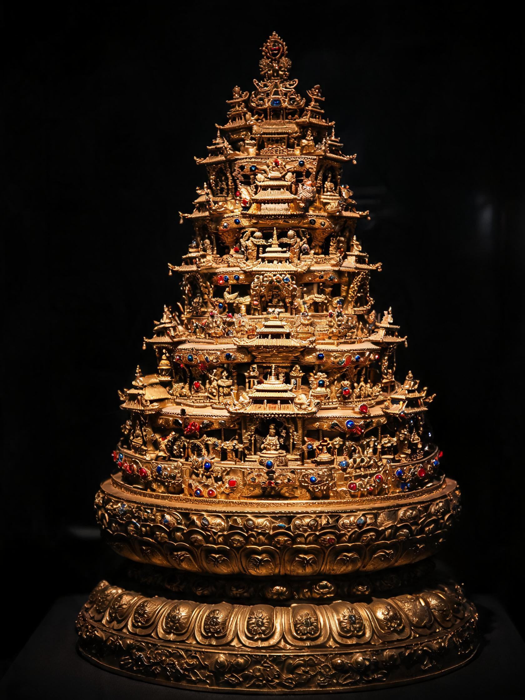
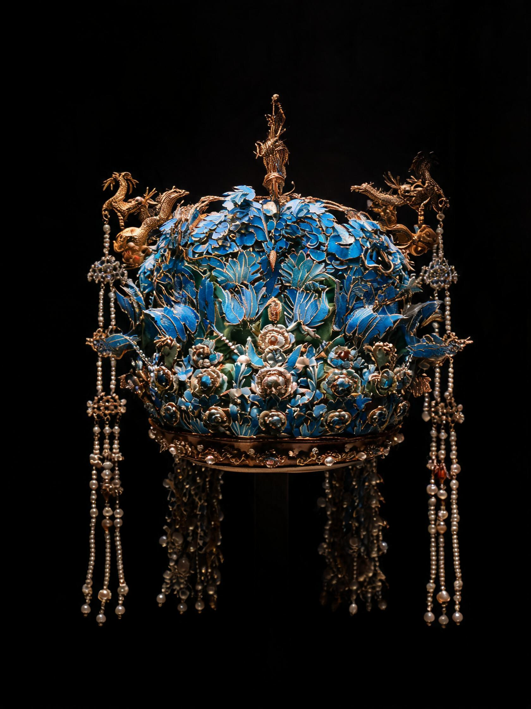
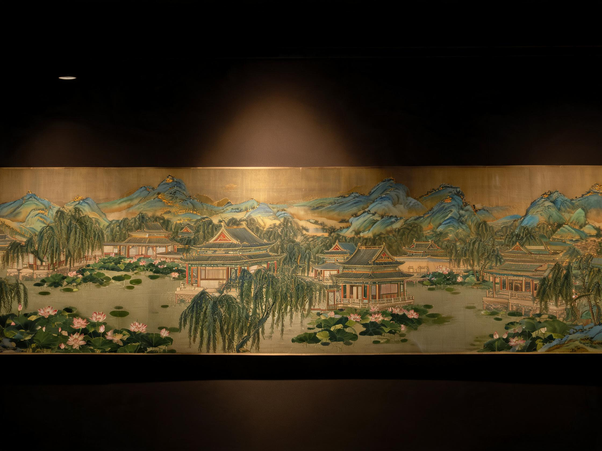
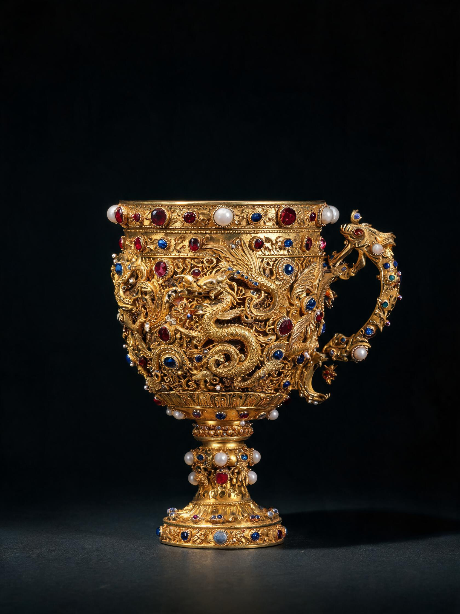
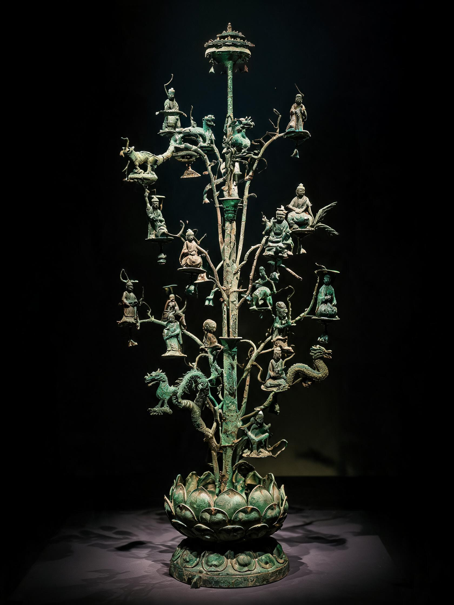
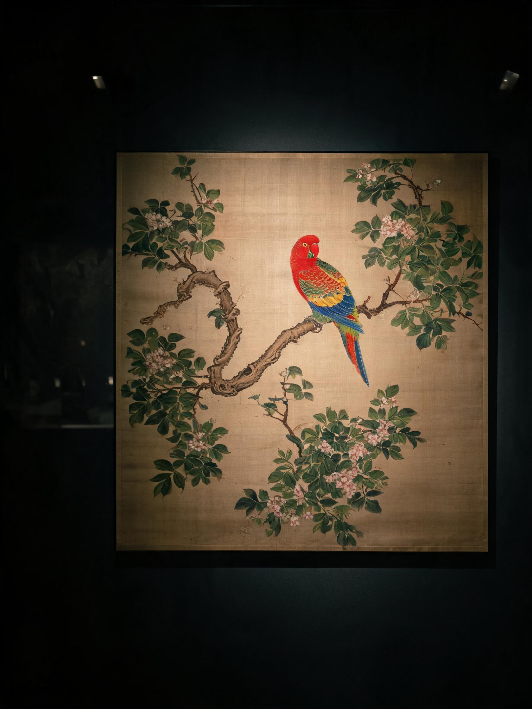

漂泊百年的游子 · 家里还亮着灯
敦煌莫高窟第320窟 · 飞天藻井
每一件都是中华文明的游子 · 等待归家

大英博物馆 · 第33号展厅
→
大英博物馆 · 第33号展厅
→
大英博物馆 · 东方馆
→宾夕法尼亚大学博物馆
→
法国 · 枫丹白露宫
→
美国大都会艺术博物馆
→土耳其 · 托普卡比宫
→
法国 · 巴黎国家图书馆
→英美俄等八国图书馆
→
英国 · 华莱士收藏馆
→
广汉三星堆博物馆等
→
美国波士顿博物馆
→拼的是图像
盼的是归期
近代以来，由于战争劫掠、非法走私与不平等贸易， 超过1000万件中华文物散佚海外，分布在全球47个国家的200余座博物馆与私人藏家手中。 每一件漂泊的文物，都是中华文明被割裂的血脉。 我们整理出其中12件具有代表性的遗珍，希望通过拼图这一最朴素的方式， 让每一段历史的碎片回到一起，让每一件游子重新被记得。
← 返回首页